このページに書かれている内容は古い情報です。
現在、大幅に作り直した新バージョンを開発中です。
現在、大幅に作り直した新バージョンを開発中です。
開発環境構築（MySQL）
Yuimarl の開発環境で使用するデータベースとしては、Java EE の開発環境に標準で付属されている Java
DB を推奨いたします。しかし、何らかの理由で、MySQL を使用したい場合は、MySQL を使用することも可能です。
ここでは、MySQL を使用する方法について記述します。
ここに書かれているのは、データベースに関連する部分のみです。それ以外については、開発環境構築をご覧ください。
MySQL
MySQL は、以下の手順でインストールします。
- MySQLのダウンロードページにアクセスします。
http://www.mysql.com/downloads/
「MySQL Community Edition (GPL)」のリンクをクリックします。
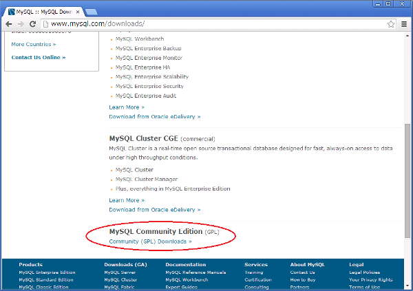 - 「MySQL Community Server」の「DOWNLOAD」をクリックします。
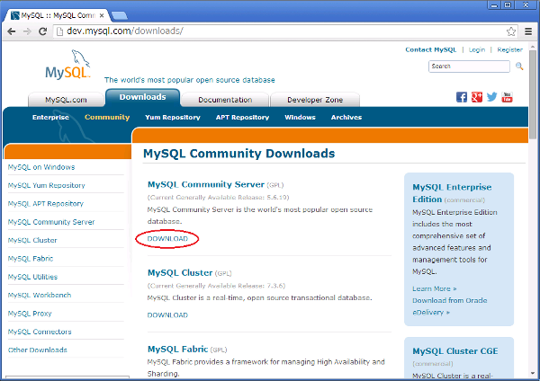 -
「Select Platform」で「Microsoft Windows」を選択し、「Windows(x86, 64-bit),
MySQL Installer MSI」の「Download」ボタンを押します。
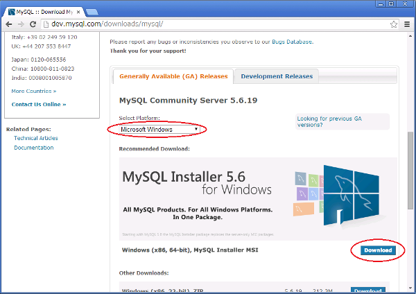 - Oracleのログインを行い、インストーラをダウンロードします。
- ダウンロードした「mysql-installer-community-5.6.19.0.msi」を実行します。
- インストーラが起動するので、「Install MySQL Products」をクリックします。
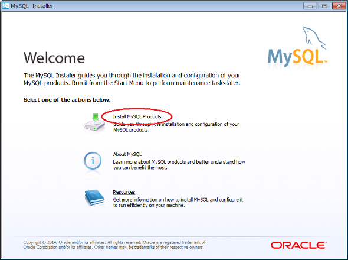 - 「License Agreement」画面で「I accept the license terms」をチェックして、「Next」ボタンを押します。
- 「Find latest products」画面で「Execute」ボタンを押します。続いて「Next」ボタンを押します。
- 「Choosing a Setup Type」画面で「Server Only」を選択し、「Next」ボタンを押します。
- 「Check Requirements」画面で「Next」ボタンを押します。
- 「Installation Progress」画面で「Execute」ボタンを押します。続いて「Next」ボタンを押します。
- 「MySQL Server Configuration」画面で「Config Type」を「Development Machine」とし、それ以外はデフォルトのままで「Next」ボタンを押します。
- 「Root Account Password」でRootユーザーのパスワードを設定します。続いて「Next」ボタンを押します。
- 「Windows Service Detail」を任意に設定します。（「Start the MySQL Server at System Startup」をチェックしない場合、手動で起動する必要があります。）続いて「Next」ボタンを押します。
- 「Finish」ボタンを押して終了します。
- 「スタート」-「すべてのプログラム」-「MySQL」-「MySQL Server 5.6」とたどり、「MySQL 5.6 Command Line Client」を起動します。
- 「Enter password:」と表示されたら、Rootユーザーのパスワードを入力します。
- 「mysql> 」とプロンプトが表示されたら、次のように入力します。
create database yuimarl default character set 'utf8';
create user yuimarluser identified by 'yuimarlpass'; ← 'yuimarlpass'はパスワード。変更したい場合は変更してください。
grant all privileges on yuimarl.* to 'yuimarluser'@'%' with grant option;
grant all privileges on yuimarl.* to 'yuimarluser'@'localhost' identified by 'yuimarlpass' with grant option;
quit;
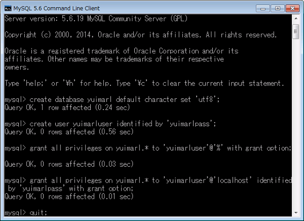
Yuimarlデータベースのセットアップ
- NetBeansで「yuimarl-db-mysql-setup」プロジェクトを右クリックし、ポップアップメニューから「ビルド」を選択します。
出力欄に、「BUILD SUCCESS」と表示されれば、ビルドが成功です。
- このビルドを実行すると、「yuimarl-db-mysql-setup」プロジェクトの「build.xml」ファイルにある、「createMySQL」（テーブル作成）と「importInitData」（データ投入）のAntタスクが実行されます。
（「ファイル」タブでファイルを見ることができます。） - 「createMySQL」で作成されるテーブルの定義は、「yuimarl-db-mysql-setup」-「sql」-「YUIMARL_MySQL_DDL.sql」ファイルにあります。
- 「importInitData」で作成されるデータは、「yuimarl-db-mysql-setup」-「xml」-「YUIMARL_DB_INIT_DATA.xml」ファイルが読み込まれます。このデータ投入には、DbUnitが使用されています。
- [データの確認方法]
投入されたデータの中身を確認するためには、上記同様に、「MySQL 5.6 Command Line Client」を起動してログインします。
以下のコマンドを実行します。use yuimarl;
show tables; ← テーブルの一覧を表示
select * from PARTY; ← PARTYテーブルの中身を確認する場合
quit;
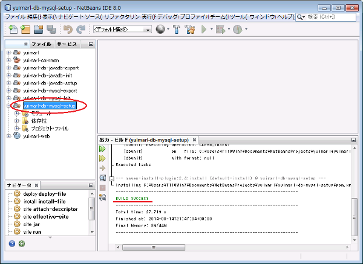
- このビルドを実行すると、「yuimarl-db-mysql-setup」プロジェクトの「build.xml」ファイルにある、「createMySQL」（テーブル作成）と「importInitData」（データ投入）のAntタスクが実行されます。
JDBCの設定
GlassFishの管理画面で、MySQLデータベースへの接続のためのJDBC接続の設定を行います。
- GlassFishサーバーが起動している場合、次の手順で停止します。
「スタート」-「すべてのプログラム」-「Java EE 7 SDK」-「アプリケーション・サーバーの停止」
（コマンドプロンプトから、「C:\glassfish4\bin\asadmin.bat stop-domain domain1」とコマンドを入力することによっても、停止することができます。） - 「yuimarl-db-mysql-setup」プロジェクトの下に、「lib」というフォルダがあり、そのフォルダに、「mysql-connector-java-5.1.30-bin.jar」というファイルが入っています。このファイルを、「C:\glassfish4\glassfish\lib」フォルダにコピーします。
- 次の手順でGlassFishサーバーを起動します。
「スタート」-「すべてのプログラム」-「Java EE 7 SDK」-「アプリケーション・サーバーの起動」
（コマンドプロンプトから、「C:\glassfish4\bin\asadmin.bat start-domain domain1」とコマンドを入力することによっても、起動することができます。） - ブラウザで
http://localhost:4848/
にアクセスし、管理画面を起動します。 - 管理画面の左側のツリーから、「リソース」-「JDBC」-「JDBC接続プール」を選択します。 「JDBC接続プール」画面で「新規」ボタンを押します。
- 「新規JDBC接続プール（ステップ1/2）」画面で、次のように入力・選択します。
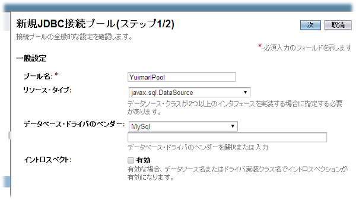名前 値 プール名 YuimarlPool リソースタイプ javax.sql.DataSource データベース・ドライバのベンダー MySQL
「次」ボタンを押します。 - 「新規JDBC接続プール（ステップ2/2）」画面の「追加プロパティ」で、以下の値を設定します。（下記以外は変更しない）
名前 値 DatabaseName yuimarl Password yuimarlpass URL jdbc:mysql://localhost:3306/yuimarl?characterEncoding=utf8 Url jdbc:mysql://localhost:3306/yuimarl?characterEncoding=utf8 ServerName localhost User yuimarluser
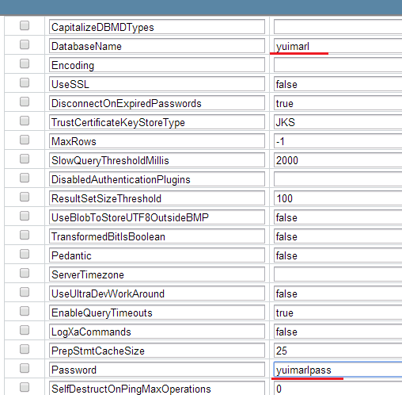
「終了」ボタンを押します。 - 管理画面の左側のツリーから、「リソース」-「JDBC」-「JDBCリソース」を選択します。
「JDBCリソース」画面で「新規」ボタンを押します。
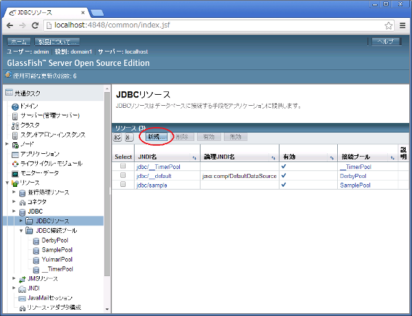 - 「新規JDBCリソース」画面で、次のように入力・選択します。
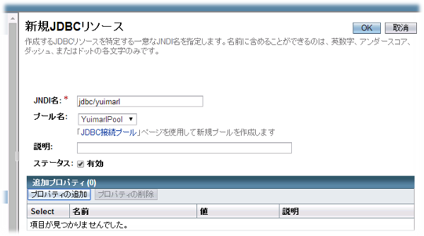名前 値 JNDI名 jdbc/yuimarl プール名 YuimarlPool
「OK」ボタンを押します。
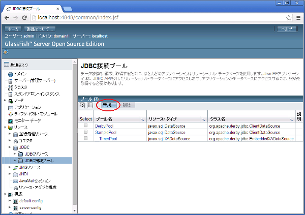
以上が、MySQLの初期セットアップの手順です。通常の開発時には、以下の順に行います。
MySQL起動 → GlassFish起動 → NetBeans起動 → Yuimarl実行 → NetBeans終了 → GlassFish停止 →
MySQL停止
（MySQLのサービスが常時起動している場合は、MySQLの起動・停止は不要です。）